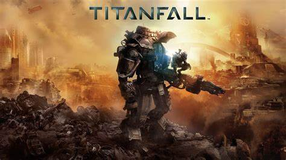
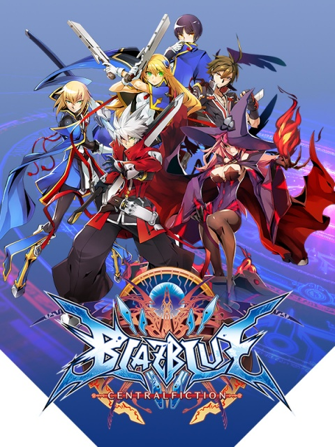

apex legends was mijn eerste favoriete game die ik heel vaak speelde kort nadat het uitkwam.
de game apex legends is een battle royale game waarbij je in een team van drie tegen 11 andere squads van 3 moet vechten met guns en je hebt ook verschillende charactters met verschillende abillities.

mijn tweede favoriete game is titanfall 2.
titanfall 2 is een fps game waarbij niet alleen als soldaat maar ook als een grote robot die titans genoemd worden speeld.
deze game is mijn tweede meest favoriete game omdat je veel vrij kunt bewegen en de wapens, abillities en verschillende titans zijn leuk om te spelen.

mijn derde favoriete game is blazblue central fiction.
blazblue is deel van de anime fighting game series blazblue waarin je veel verschillende characters hebt waarmee je veel combos kunt doen en online tegen andere kan spelen.
blazblue vind ik heel leuk vanwege de story van de anime game series en de characters zijn ook leuk om te spelen.
 Games
Games